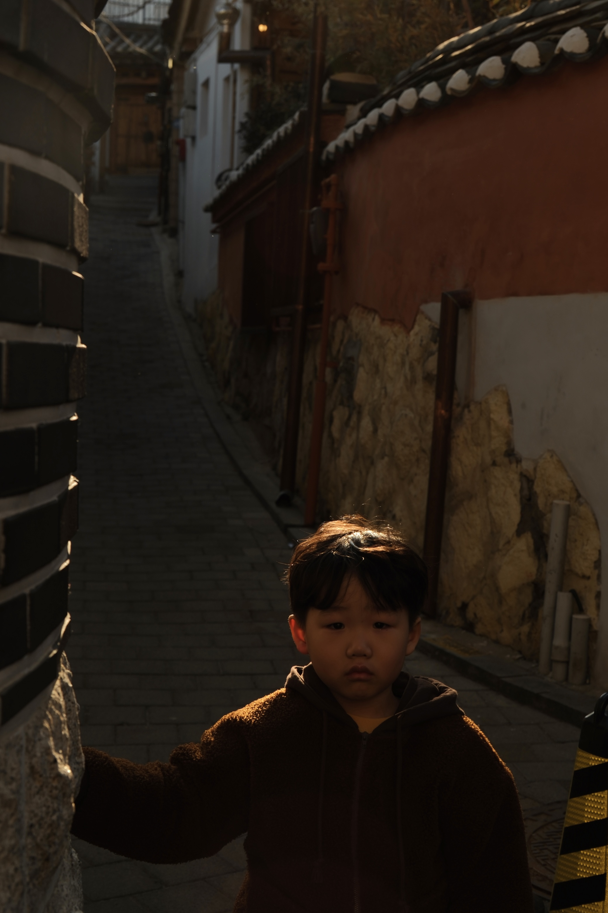
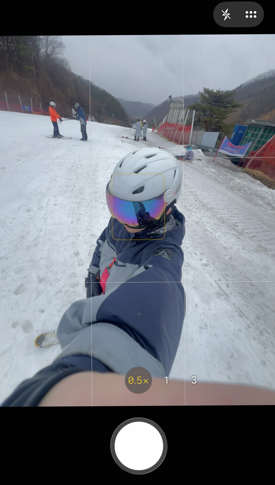
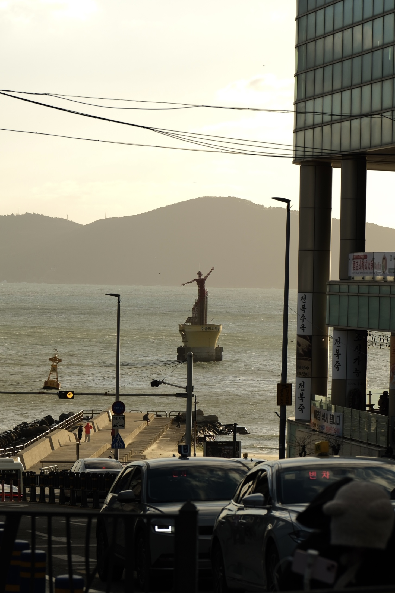
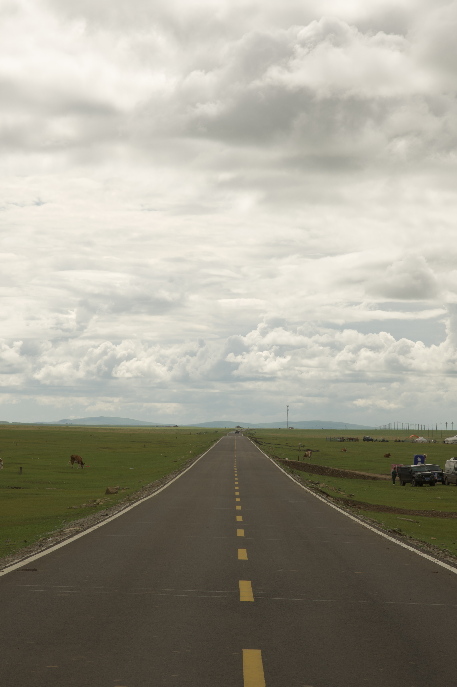
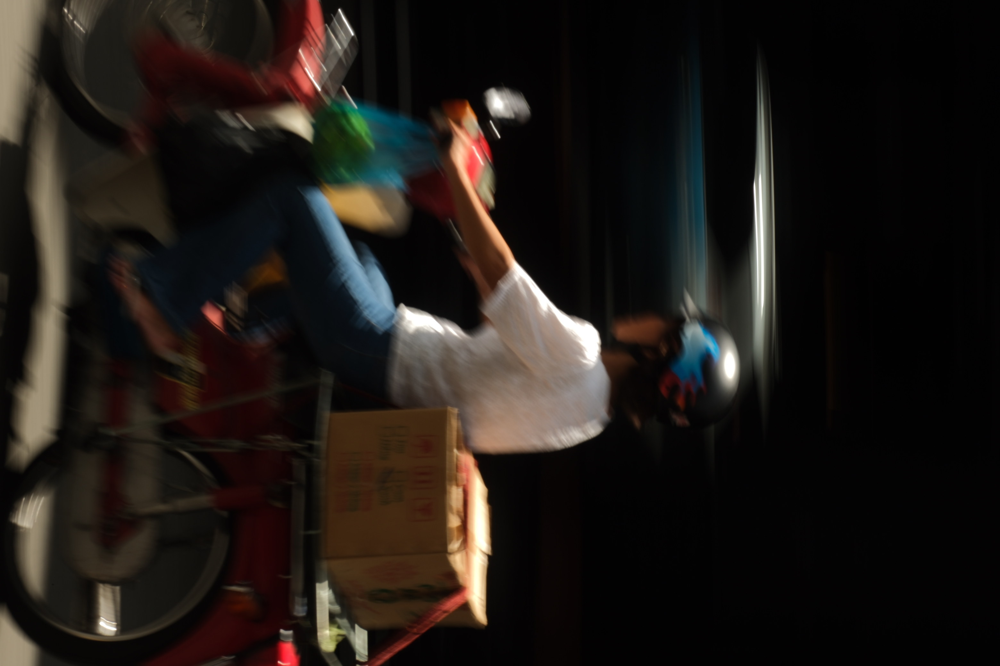

Hello! I'm Dave.
I'm a Year 1 Accountancy student at SUSS, with interests in photography, travelling, and exploring new opportunities.
Welcome to my personal space, where I share more about myself and the experiences that shape me.
Swipe to explore my photographs →




